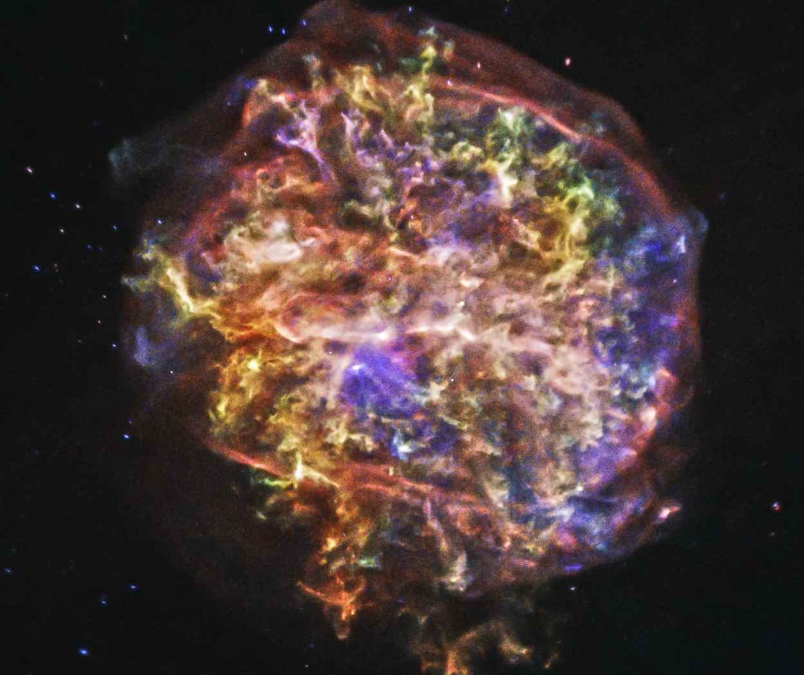

Forrige side
 Velkommen til del 3E! Vi har allerede sett hva som skjer med aldrende stjerner. Nå skal vi se hva som skjer i dødsøyeblikket og etterpå. Hvordan ender en stjerne sitt liv? Og hvorfor slik? Hva slags rester får vi igjen etterpå? Og spesielt, hva kommer til å skje med solen?
(Illustrasjon: Røntgenbilde av supernovarest G292.0+1.8 i Melkeveien (NASA/Chandra) Neste side